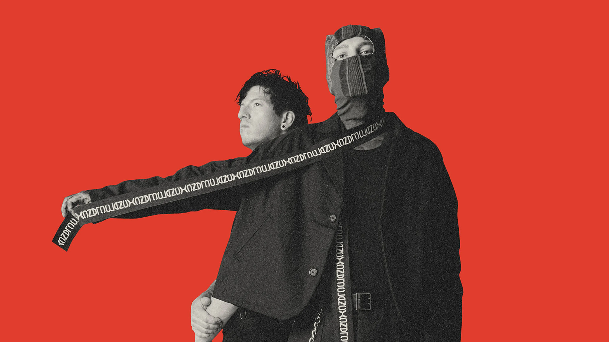
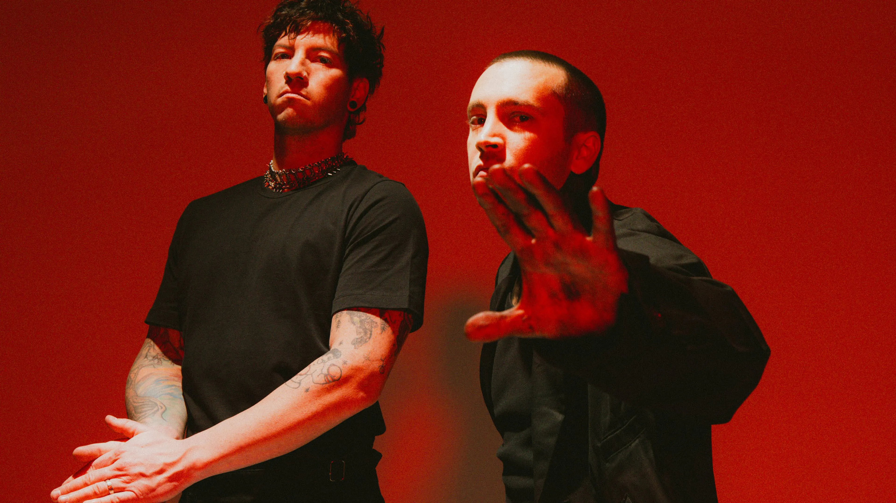

Twenty One Pilots é uma dupla musical americana de Columbus, Ohio

grupo foi formado em 2009 pelo vocalista Tyler Joseph, juntamente com Nick Thomas e Chris Salih, que deixaram a banda em 2011. Desde então, a formação consiste em Tyler Joseph e o baterista Josh Dun
A dupla é mais conhecida pelos singles " Stressed Out ", " Ride " e " Heathens ", que alcançaram sucesso comercial entre 2015 e 2016. A dupla recebeu um Grammy de Melhor Performance Pop de Duo/Grupo na 59ª edição do Grammy Awards por "Stressed Out".
A dupla alcançou sucesso estrondoso com seu quarto álbum, Blurryface (2015), que produziu os singles de sucesso "Stressed Out" e "Ride" e se tornou o primeiro álbum em que todas as faixas receberam pelo menos a certificação de ouro da Recording Industry Association of America (RIAA) . O lançamento de "Heathens" também fez do grupo o primeiro artista alternativo da história a ter dois singles simultâneos no top 5 da Billboard Hot 100 e o terceiro artista de rock da história a ter dois singles simultaneamente no top 5 da Billboard Hot 100, juntando-se aos Beatles e Elvis Presley .
“A música é uma maneira segura de falar sobre coisas que normalmente são difíceis de dizer."
Tyler Joseph
"I wish I found some better sounds no one's ever heard
I wish I had a better voice that sang some better words
I wish I found some chords in an order that is new
I was told when I get older all my fears would shrink
But now I'm insecure and I care what people think "
Twenty one pilots: Stressed-out

Voce pode conhecer mais sobre a banda clicando aqui